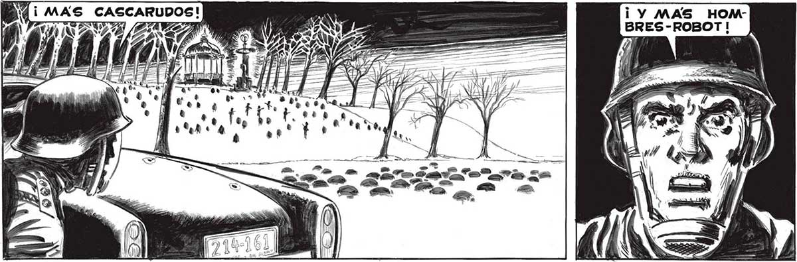
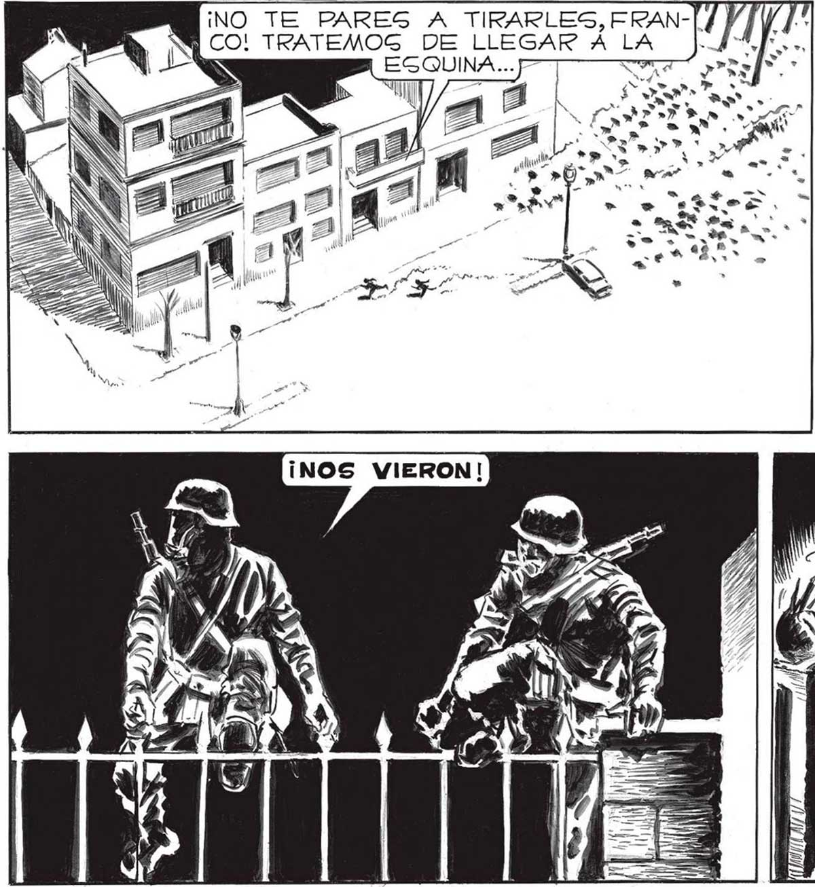
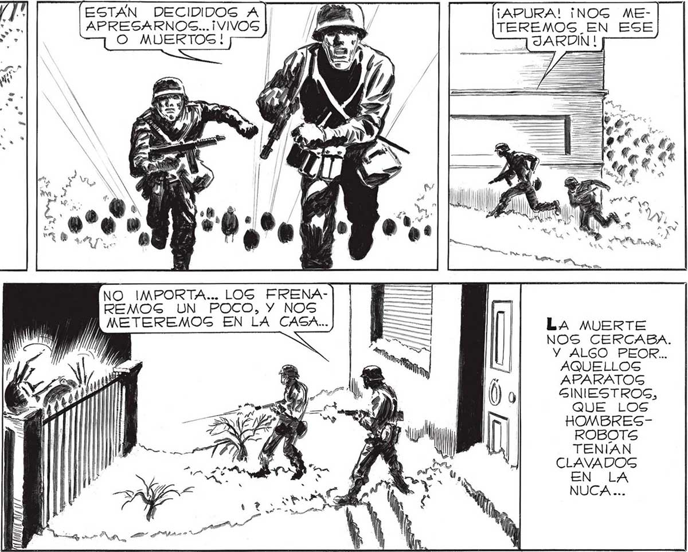

¡VEN, FRANCO! ¡NO NOS 145 QUEDA OTRA ALTERNATIVA QUE GEGUIR HUYENDO! CASCARUD | 0 ¡Y MAS HOMTR ¡PZA AR IQ BRES-ROBOT! AA gs NS rr Pz qe a y AO ES LE a RO A qa» 2 Ne y > eo. ESTAN DECIDIDOS A]| "DN ¡APURA! ¡NOG ME-] APRESARNOS... ¡VIVOS / a TEREMOS EN ESE O MUERTOS! | ' ino te pares A TIRARLES, ERAN A G CO! TRATEMOG DE LLEGAR Á LA ¡AA o O | S NO IMPORTA... LOGS FRENAREMOG UN POCO, Y NOS | | ÍMETEREMOS EN LA CASA...) | M= LA MUERTE | = NOS CERCABA. Y ALGO PEOR.. AQUELLOS APARATOS GINIESTROS, si QUE LOS IS h HOMBRESEh xy ll ROBOTS > TENÍAN y CLAVADOG y > UA EN LA | NUCA ... a A, E A A


